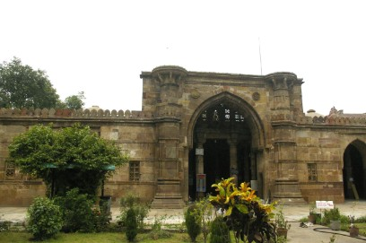
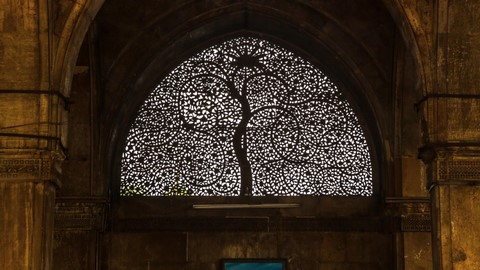

Ahmedabad, also known as Amdavad, was named after Sultan Ahmed Shah, who founded the city in 1411. It is one of the major cities of Gujarat. It served as the capital of Gujarat from 1960 to 1970. Ahmedabad has a strong association with India’s struggle for independence. Mahatma Gandhi lived in Ahmedabad for several years and it was from here that he started the Dandi March, also known as the Salt March, an act of non-violent resistance and civil disobedience against British rule in India.Located on the banks of the Sabarmati River, the city of Ahmedabad built its fortune on the thriving textile industry, which earned it the nickname ‘Manchester of the East’. Notwithstanding its attraction as a business destination, Ahmedabad, the largest city in Gujarat remains steeped in history and has a wealth of historical attractions.
Adalaj Step WellSet in the quiet village of Adalaj, 19 km from Ahmedabad, this step well or ‘vav’ has served as a resting place for many pilgrims and caravans along their trade routes.This was not just a cultural and utilitarian space, but also a spiritual refuge. It is believed that villagers would come everyday in the morning to fill water, offer prayers to the deities carved into the walls and interact with each other in the cool shade of the vav. The stepwell has three entrance stairs and is a spectacular example of Indo-Islamic architecture and design with intricate Islamic floral patterns and Hindu and Jain symbolism. | |
|
 |
Ahmed Shah's MosqueLSouth-west of Bhadra Fort, Ahmed Shah’s Mosque was built in 1414 by Sultan Ahmed Shah, the founder of Ahmedabad city and it is one of the oldest mosques in the city. The prayer halls (Mehrabs) of the mosque have been intricately designed using black and white marble. There are beautifully carved stone pillars and jaali screens and an elaborately carved ceiling with a circular symmetry. |
Nal SarovarThe Nal Sarovar Lake and the wetlands around it were declared a bird sanctuary in 1969. Spread over 120 sq.kms, at a distance of about 60 km. from Ahmedabad, the lake attracts a large variety of birds like plovers, sandpipers and stints and is a birdwatcher’s delight. In addition, migratory birds arrive in vast numbers, homing in on the lake during the winter months. There are flocks of pelicans, flamingoes, ducks, demoiselle cranes, common cranes, and several waders occupying huge patches of the lake during this season. |
|
|
 |
Sidi Saiyyed's MosqueThe Sidi Saiyyed mosque built in 1573, is thelast of the major mosques to be built in Ahmedabad under the Mughal rule. The carved jaalis in the windows of the western wall of the mosque are known worldwide and have become a symbol of the city of Ahmedabad. The carvings look like fine lace filigree work, but are hewn from solid stone. The craftsmanship of this mosque places it on a level nearly unequaled in the world. |
Sabarmati Gandhi AshramSabarmati Gandhi Ashram was the centre of Mahatma Gandhi's non-violent struggle against the British for the independence of India. Documents related to his non-violence movement, including the Dandi March, which began from here, have been put on display at the Gandhi Smarak Sangrahalaya (museum). There is a library for literature on Gandhi that holds an immense archive of letters written by him, most of them on used paper scraps. At this ashram, Gandhiji tried his hand at farming, learnt the art of spinning and weaving, and led the production of khadi. |
Gujrati Thali
A Gujarati thali typically comprises of one or two steamed or fried snacks, a green vegetable, kathol, yogurt dishes like dahi, kadhi, or shrikhand, khichdi, daal, a variety of breads and sweets. Accompaniments include chutneys, pickles and a salad .

Khaman Dhokla
This fluffy, sweet-and- sour delicacy made out of besan or gram flour. This dish has many variants like Tam Tam khaman, Sada Khaman, Mariwala (pepper) Khaman and green-fry khaman, dhokla, khakhra, mathis, chakri, fafda and more!
Khandvi
These are made with a batter of gram flower and buttermilk or yoghurt, seasoned and cooked till thick, cut into strips and rolled tightly into bite sized snacks and then tempered with mustard seeds. It is one of the most popular Gujarati snacks.

Thepla
Made from gram flour, whole wheat flour, fresh fenugreek leaves and spices, these flat breads are healthy snacking options and one of the famous Gujarati snack.
Applique & Patch Work
Applique is one of the oldest and finest crafts of Gujarat. By using different patches of fabric, beautiful forms of floral and animal designs are prepared for quilts, hangings, modern household products and apparels.

Chaniya Choli
Chaniya choli is a traditional dress which is a straight cut skirt with a blouse that can be found in cotton and many other fabrics. The Chaniya choli is the favourite female apparel worn during festivals, weddings or special events in India. This is due to traditions as well as of the fact that it is available in a number of fabrics with many different decorative choices.
|
|
AirSardar Vallabhai Patel International Airport in Ahmedabad is well connected to all major cities in the country |
|
|
RoadAhmedabad is a railhead and a major junction connected with important cities and towns in the country |
|
|
RailAhmedabad is connected by excellent motorable roads and highways with the rest of the country |
|
|
Map |

.png)
.png)